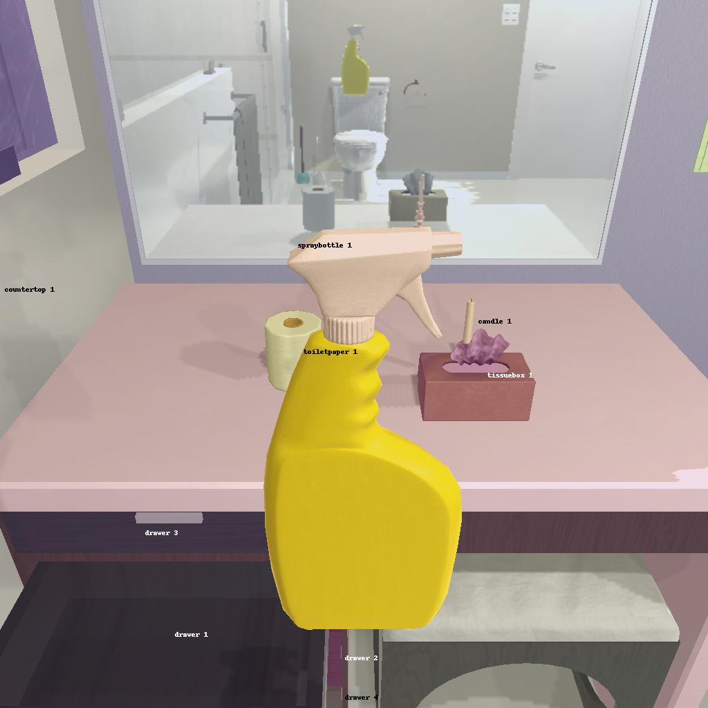

---------------------------------------------------------task: 28---------------------------------------------------------
--------------------------------------------------------------------------------------------------------------------------------------------------------------------
--------------------------------------------------------------------------------------------------------------------------------------------------------------------
Step:--------------------------------------------------------------------------14-------------------------------------------------------------------------------
----------------------------------------
VLM Prompt:
Image1:
Image2:
Image3:
**Instruction**
1. Analyze the provided image to identify all visible household objects, focusing on those relevant to the task description "put two spraybottle in toilet."
2. Use the analysis of the image and the task hint "The agent must find an object of the desired type, pick it up, find the correct location to place it, put it down there, then look for another object of the desired type, pick it up, return to previous location, and put it down there with the other object." to answer the question: what is the most reasonable action in the choices for the task description "put two spraybottle in toilet"?
4. Decide and write the answer using the template: The answer is: (i): , where i is the real number. If there is no desired object in the image, search every place based on **Initial Observation** to find the object. And if no one is exactly correct, choose a similar answer.
**Initial Observation**
You are in the middle of a room. Looking quickly around you, you can see bathtub (1), bathtubbasin (1), cart (1), sink (1), garbagecan (1), sinkbasin (1), countertop (1), drawer (1-4), toilet (1), toiletpaperhanger (1)
**Answer Choices**
(1): go to bathtub 1
(2): go to bathtubbasin 1
(3): go to cart 1
(4): go to sink 1
(5): go to garbagecan 1
(6): go to sinkbasin 1
(7): go to countertop 1
(8): go to drawer 1
(9): go to drawer 2
(10): go to drawer 4
(11): go to toilet 1
(12): go to toiletpaperhanger 1
(13): close drawer 3
(14): put spraybottle 1 in/on drawer 3
(15): examine spraybottle 1
(16): examine drawer 3
**Answer**
Let's think step by step by following the instructions.
----------------------------------------
----------------------------------------
Original Response:
First, we need to analyze the images to identify the household objects relevant to the task "put two spraybottle in toilet." In Image 1, we can see a spraybottle on the tank of the toilet, which is labeled "spraybottle 1." Image 2 and Image 3 show the same scene from a different angle, also displaying "spraybottle 1" on the countertop. There is no second spray bottle visible in any of the images.
According to the initial observation, we are in the middle of a room with various objects around us. Our task is to find two spray bottles and put them in the toilet. From the images provided, we have identified one spray bottle.
The task hint tells us that the agent must find an object of the desired type, pick it up, and find the correct location to place it. Since we have identified "spraybottle 1," the next reasonable action would be to pick it up and move it to the toilet.
However, the answer choices do not include an action for picking up the spray bottle. Therefore, we must choose the next best action that aligns with our task. The most reasonable action would be to go to the location of "spraybottle 1" so that we can then pick it up and move it to the toilet.
"Spraybottle 1" is located on the countertop in Images 2 and 3. Thus, the most reasonable action from the choices provided would be to go to the countertop.
The answer is: (7): go to countertop 1.
----------------------------------------
----------------------------------------
>>> Refine Original VLM Response and Get Pure Action: go to countertop 1
----------------------------------------
-----------------------------------------------------------------
Running time: 17.16647720336914 seconds
Total Money: 18.36444
-----------------------------------------------------------------
-----------------------------------------------------------------
Text Observation:You arrive at loc 6. On the countertop 1, you see a tissuebox 1, a toiletpaper 1, a handtowel 1, and a candle 1.
-----------------------------------------------------------------
UNSUCCEED